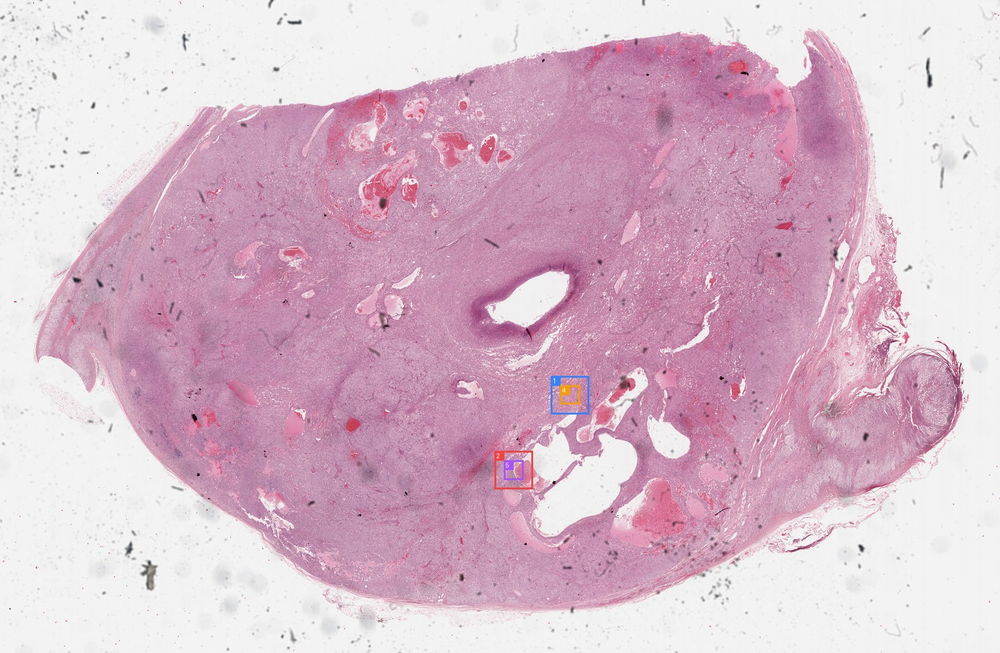
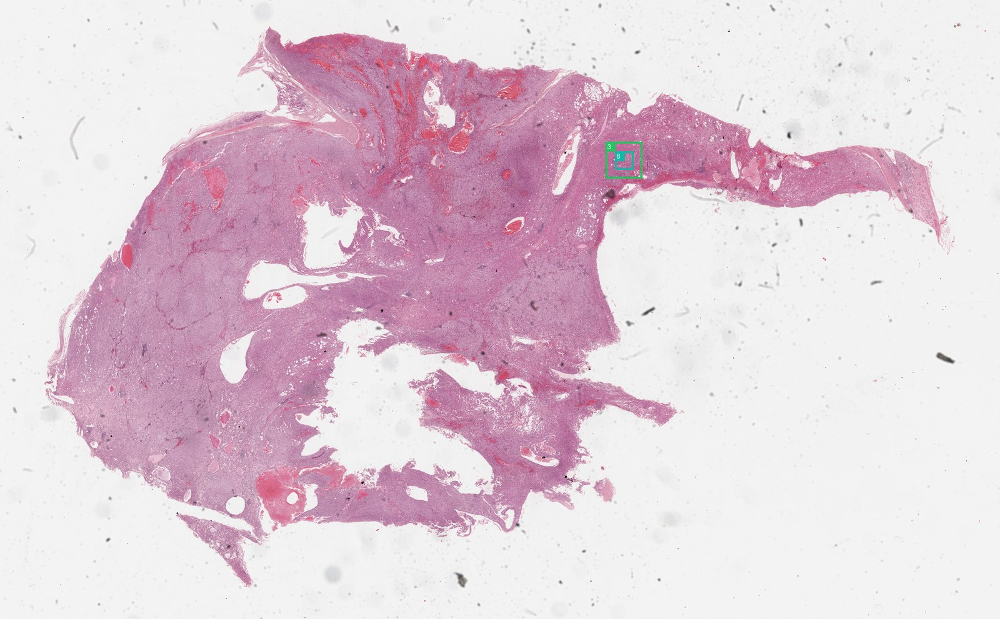

Visual Evidence
Review ROI thumbnails, WSI overviews, zooms, and segmentation overlays.


Each card opens in the inspector with source path, segmentation fractions, zoom lineage, and related evidence.
MedGemma rounds are shown as morphology evidence, separated from final report generation.
No morphology rounds found.
KEEP hits are supporting or differential knowledge, not direct visual observations.
No KEEP hits found.
A directory-style timeline. Click a step to inspect the exact checkpoint payload without leaving the page.
01_roi_selection
02_site_prediction
04_segmentation_qc
06_preliminary_diagnosis_sufficiency
07_reinspection
09_slots_claim_verification
10_report
Claims should be supported, weak, not assessable, or removed. The evidence column links claims back to figures or non-image evidence.
| Claim | Status | Field | Statement | Evidence |
|---|---|---|---|---|
| supported | site | adrenal gland / adrenocortical tissue The site is explicitly provided as 'adrenal gland / adrenocortical tissue' in the evidence graph with high confidence. | ||
| supported | primary_diagnosis | Adrenocortical carcinoma The combination of the known adrenal site and the visual evidence of a high-grade neoplasm with lipid-rich cytoplasm, necrosis, and hemorrhage is diagnostic of... | ||
| supported | broad_type | carcinoma The tissue is composed of cohesive sheets of neoplastic epithelial cells, consistent with a carcinoma. | ||
| supported | subtype | adrenocortical carcinoma The specific subtype is supported by the adrenal site and the characteristic morphology of large polygonal cells with eosinophilic/vacuolated cytoplasm. | ||
| supported | malignancy | malignant Malignancy is supported by the presence of extensive necrosis, hemorrhage, and high cellularity. | ||
| supported | grade | high The tumor exhibits features of high grade, including extensive necrosis, hemorrhage, and cellular atypia. | ||
| supported | necrosis | present Segmentation statistics show a significant fraction of 'Dead' tissue (32.6% in ROI 24800, 44.6% in ROI 72502), and visual inspection confirms extensive necrosi... | ||
| supported | invasion | not assessable from H&E images Invasion cannot be definitively assessed from the provided ROI images as they focus on the tumor parenchyma and do not show the tumor margin or interface with... | ||
| supported | ihc_molecular | not assessable from H&E images IHC and molecular data are not available in the provided H&E images or evidence graph. | ||
| supported | tumor_architecture | Diffuse solid sheets of cells with focal trabecular arrangement; extensive areas of tumor necrosis and hemorrhage. The images show diffuse solid sheets of cells with focal trabecular patterns, and extensive areas of necrosis and hemorrhage are clearly visible. | ||
| supported | cytology | Large polygonal cells with abundant eosinophilic to vacuolated (lipid-rich) cytoplasm; marked nuclear pleomorphism, hyperchromasia, and prominent nucleoli. The cells are large and polygonal with abundant eosinophilic to vacuolated (lipid-rich) cytoplasm. Nuclear pleomorphism and prominent nucleoli are visible. | ||
| supported | stroma_inflammation | minimal stroma; hemorrhage present The stroma is minimal, and hemorrhage is present in the necrotic areas. |